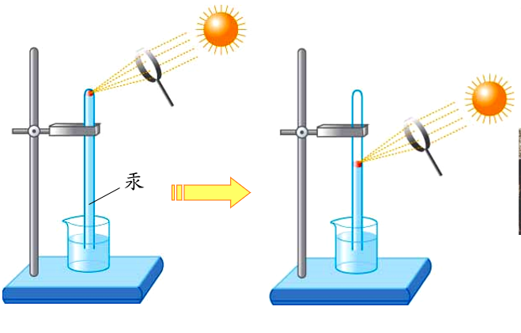
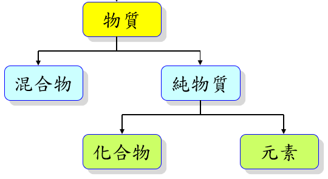

元素與化合物
The elements
微觀之旅。
＊古希臘哲學家認為萬物都由水、火、土和空氣四種元素所組成註1：萌芽的植物是水、火及土結合而成，樹木被砍伐並晒乾後，失去水，所以可以燃燒，燃燒後又會變回火和土。註2：當時，有人深信只要找到這四種元素的最佳比例，便可點石成金，這就是中世紀所謂的「煉金術」。＊四元素說：由亞里斯多德所提出，土、空氣、水、火，而元素則由這些原始性質依不同比例組合而成。＊西元1774年，英國科學家卜利士力以凸透鏡將陽光匯聚在紅色氧化汞（HgO）中，使其分解成氧氣和汞。＊法國科學家拉瓦節經實驗將水分解出 氧氣與氫氣，證實水並非元素。

四元素說因此遭到質疑，並逐漸被推翻

＊混合物：由兩種或兩種以上的物質混合而成。註1：組成的物質與比例不固定，性質會隨之改變。＊純物質：由單一物質組成。註1：具有固定的組成與性質。＊化合物：由兩種或兩種以上元素，以一定比例組合的純物質。註1：化合物可以用通電、加熱、照光等一般化學方法加以分解的純物質。註2：化合物不可用溶解、過濾、蒸法等一般物理方法加以分解。＊元素：無法以通電、加熱、照光等一般化學方法再分解的純物質。